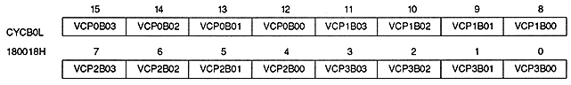
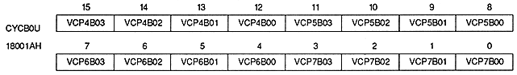
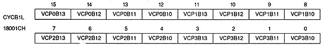
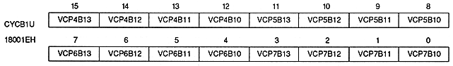

VRAM cycle pattern bit (for VRAM-B0) : VRAM cycle pattern bit
VCP0B00 to VCP0B03 | 180018H | bits 12-15 | VRAM-B0 (or VRAM-B) timing T0 |
VCP1B00 to VCP1B03 | 180018H | bit 8 ~ 11 | For VRAM-B0 (or VRAM-B) timing T1 |
VCP2B00 to VCP2B03 | 180018H | bit 4 ~ 7 | For VRAM-B0 (or VRAM-B) timing T2 |
VCP3B00 to VCP3B03 | 180018H | bit 0 ~ 3 | For VRAM-B0 (or VRAM-B) timing T3 |
VCP4B00 to VCP4B03 | 18001AH | bit 12 ~ 15 | For VRAM-B0 (or VRAM-B) timing T4 |
VCP5B00 to VCP5B03 | 18001AH | bit 8 ~ 11 | For VRAM-B0 (or VRAM-B) timing T5 |
VCP6B00 to VCP6B03 | 18001AH | bit 4 ~ 7 | For VRAM-B0 (or VRAM-B) timing T6 |
VCP7B00 to VCP7B03 | 18001AH | bit 0 ~ 3 | VRAM-B0 (or VRAM-B) timing T7 |

